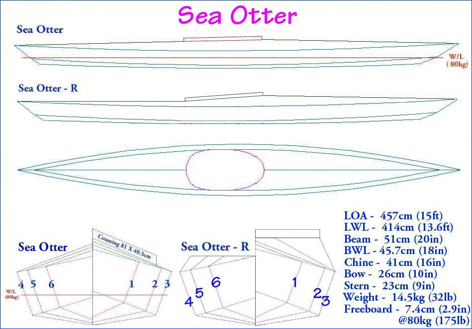

| Sea Otter / Sea Otter - R | Menu Previous Page Next Page |
|

The Sea Otter is a lower volume version of the Sea Tour 15. Maximum beam and chine width are 90% of the Sea Tour 15 dimensions. Recommended capacities range from 73kg (160lbs) to 102kg (225lbs) based on "Paddler + boat + gear". The smaller size of this folder makes it a good choice for air travel. The Sea Otter Offsets are at the end of this section. Use the (BACK) key to return. The Sea Otter-R is a lower aft deck version designed for rolling / light touring. This version uses different cross sections 4 through 6, a flat coaming, and a new skin. The flat aft deck is nearly 2in. ( 5cm) above the gunwale low point for greater freeboard and storage. This is a change from the flat aft deck Greenland kayaks which have the deck at the same height as the gunwales. Two additional .5in ( 1.25cm) deck tubes are required. The Sea Otter-R Offsets are at the end of this section. Use the (BACK) key to return. |
|